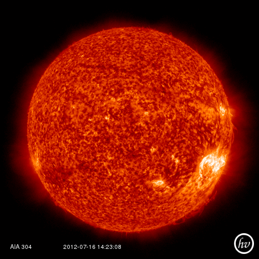

A brief tour of SunPy
Welcome to the SunPy tutorial! This brief tutorial will walk you through some of the functionality currently offered by SunPy. Start by reading this tutorial and trying out some of the examples demonstrated. Once you've completed the tutorial check out the :doc:`code reference</reference/index>` for a more thorough look at the functionality available.
1. Maps
Maps are the primary data type in SunPy they are spatially and / or temporally aware data arrays. There are types of maps for a 2D image, a time series of 2D images or 1D spectra or 2D spectrograms. Making a map of your data is the normally the first step in using SunPy to work with your data.
Creating a Map
SunPy supports many different data products from various sources 'out of the box' we shall use SDO's AIA instrument as an example in this tutorial. The general way to create a map from one of the supported data products is with the sunpy.make_map() command.
sunpy.make_map() takes either a filename, list of filenames data array and header. We can test map with:
import sunpy aia = sunpy.make_map(sunpy.AIA_171_IMAGE)
This returns a map named aia which can be maniputated with standard SunPy map commands. For more information about maps checkout the :doc:`map guide <maps>`.
2. Plotting
Let's begin by creating a simple plot of an AIA image. To make things easy, SunPy includes several example files which are used throughout the docs. These files have names like sunpy.AIA_171_IMAGE and sunpy.RHESSI_IMAGE.
Try typing the below example into your interactive Python shell:
import sunpy aia = sunpy.make_map(sunpy.AIA_171_IMAGE) aia.peek()
If everything has been configured properly you should see an AIA image with a red colormap, a colorbar on the right-hand side and a title and some labels.

There is lot going on here, but we will walk you through the example. Briefly, the first line is just importing SunPy. On the second line we create a SunPy Map object which is basically just a spatially-aware image or data array. On the last line we then plot the map object, using the built in 'quick plot' function peek().
SunPy uses a matplotlib like interface to it's plotting so more complex plots can be built by combining SunPy with matplotlib:
import sunpy import matplotlib.pyplot as plt aia = sunpy.make_map(sunpy.AIA_171_IMAGE) fig = plt.figure() ax = plt.subplot(111) aia.plot() plt.colorbar() aia.draw_limb() plt.show()
This should output something like the image below:

3. Solar Physical Constants
SunPy contains a convienient list of solar-related physical constants. Here is a short bit of code to get you started:
from sunpy.sun import constants as con # one astronomical unit (the average distance between the Sun and Earth) print(con.au) # the solar radius print(con.radius)
Not all constants have a shortcut assigned to them (as above). The rest of the constants are stored in a dictionary. The following code grabs the dictionary and gets all of the keys.:
solar_constants = con.physical_constants solar_constants.keys()
You can also use the following function to print out a table of all of the values available.
con.print_all()
These constants are provided as a convenience so that everyone is using the same (accepted values). More will be added over time.
4. Working with Times
SunPy also contains a number of convenience functions for working with dates and times. Here is a short example:
from sunpy.time import *
# parsing a standard time strings
parse_time('2004/02/05 12:00')
# This returns a datetime object. All SunPy functions which require
# time as an input sanitize the input using parse_time.
day_of_year('2004-Jul-05 12:00:02')
# the julian day
julian_day((2010,4,30))
# TimeRange objects are useful for representing ranges of time
time_range = TimeRange('2010/03/04 00:10', '2010/03/04 00:20')
time_range.center()
For more information about working with time in SunPy checkout the :doc:`time guide <time>`.
5. Querying the VSO
There are a couple different ways to query and download data from the VSO using SunPy. The method you should use depends first on your preference with respect to query style: the main method of querying uses a syntax that is unique to SunPy and may require some getting used to, but is extremely flexible and powerful. To make it easy for people coming from SSW to get started, a second "legacy" API also exists which works is very much the same way as VSO_GET in IDL.
Further, for each of the two query APIs there are interactive and non-interactive versions available, depending on the type of work you are doing.
The below example demonstrates a simple query for SOHO EIT data using the non-interactive version of the main API:
from sunpy.net import vso
# create a new VSOClient instance
client = vso.VSOClient()
# build our query
result = client.query(
vso.attrs.Time((2011, 9, 20, 1), (2011, 9, 20, 2)),
vso.attrs.Instrument('eit')
)
# print the number of matches
print("Number of records found: %d " % result.num_records())
# download matches to /download/path
res = client.get(result, path="/download/path/{file}").wait()
Note that specifying a path is optional and if you do not specify one the files will simply be downloaded into a temporary directory (e.g. /tmp/xyz). For more information about vso client checkout the :doc:`vso guide <vso>`.
6. Querying Helioviewer.org
SunPy can be used to make several basic requests using the The Helioviewer.org API including generating a PNG and downloading a JPEG 2000 image and loading it into a SunPy Map.
A simple example of a helioviewer quiery is:
from sunpy.net.helioviewer import HelioviewerClient
hv = HelioviewerClient()
hv.download_png('2099/01/01', 4.8, "[SDO,AIA,AIA,304,1,100]", x0=0, y0=0, width=512, height=512)
This downloads a PNG image of the latest AIA 304 image available on Helioviewer.org in the download_png command 4.8 refers to the image resolution in arcseconds per pixel (larger values mean lower resolution), the "1" and "100" in the layer string refer to the visibility (visible/hidden) and opacity, x0 and y0 are the center points about which to focus and the width and height are the pixel values for the image dimensions.
The result is:
For more information checkout the :doc:`helioviewer guide <helioviewer>`.